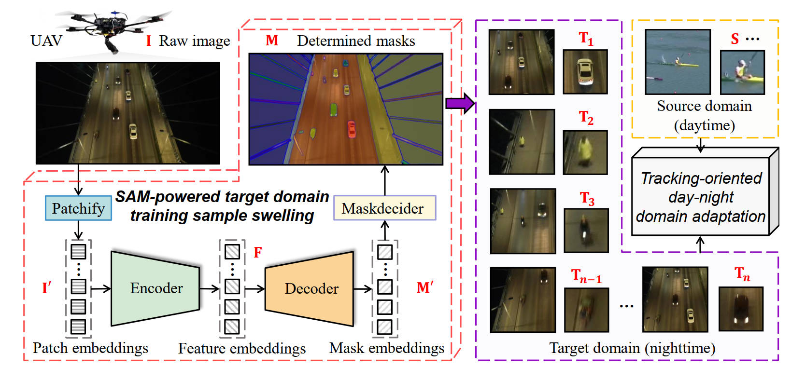
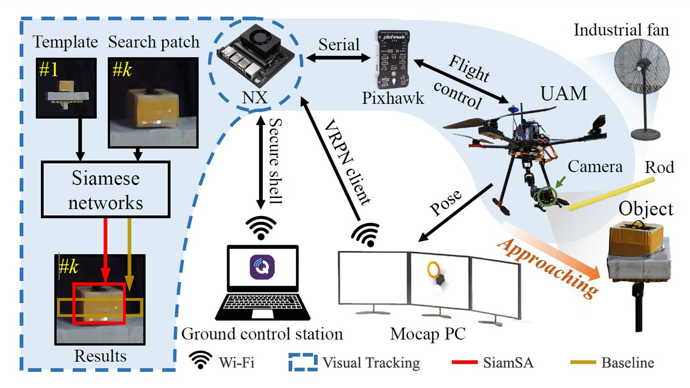
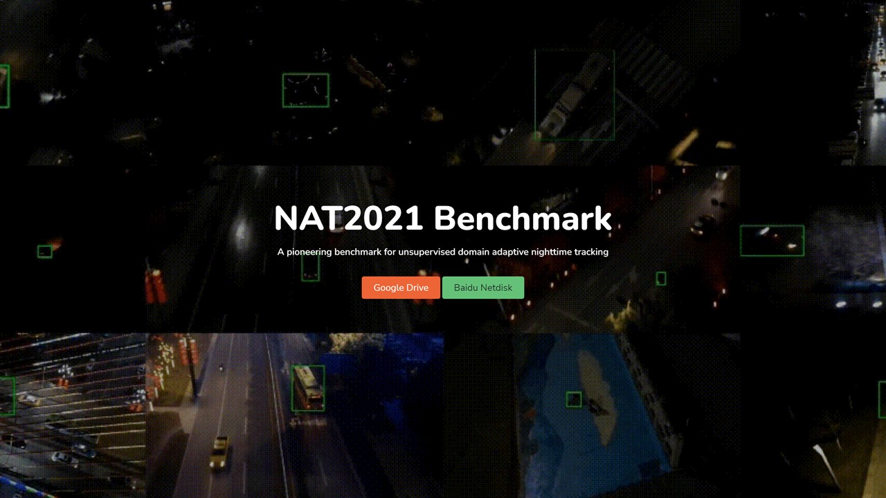
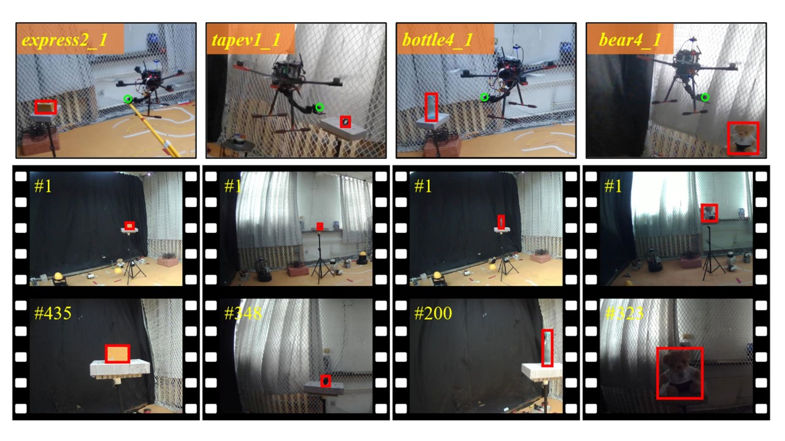

Guangze Zheng 郑光泽
😀 Welcome to my homepage. 你好! Hi! Salut! Привет! やあ! 안녕!
🧑🎓 I'm a Computer Science PhD student at the University of Hong Kong, advised by Prof. Jia Pan and Prof. Heming Cui. My research interests include visual and robotic object tracking.
🚀 News
- 🤩 (2024/03/01) [CVPR 2024] Our work NetTrack has been accepted by CVPR 2024! NetTrack aims to track highly dynamic (multiple) objects in the open world. [Paper] [Project] [Code]. Don't miss it if you are interested in Open-World Tracking.
- 👀 (2023/07/08) A review paper on "Single object tracking (SOT) for UAV" has been accepted by Artificial Intelligence Review [Paper] [Code]. Don't miss it if you are interested in single object tracking on UAV platforms.
- ✈️ (2023/07/04) We present SAM-DA [Paper] [Code], a SAM-powered domain adaptation method for nighttime UAV tracking! With only 2.4 hours of training, the performance surpasses baseline with 12 hours of training, enabling the rapid deployment of nighttime UAV trakcing methods!
🌟 Featured Publications
(CVPR 2024) NetTrack: Tracking Highly Dynamic Objects with a Net [Paper] [Code] [Project Page] [Youtube] [Dataset]
Guangze Zheng, Shijie Lin, Haobo Zuo, Changhong Fu, Jia Pan*

(Arxiv 2023) SAM-DA: UAV Tracks Anything at Night with SAM-Powered Domain Adaptation [Paper] [Code] [Project Page]
Liangliang Yao†, Haobo Zuo†,Guangze Zheng†, Changhong Fu, Jia Pan
† equal contribution


(CVPR 2022) Unsupervised Domain Adaptation for Nighttime Aerial Tracking [Paper] [Code] [Dataset] [Video] [Supplementary Material]
Junjie Ye, Changhong Fu, Guangze Zheng, Danda Pani Paudel, and Guang Chen.

📰 Co-Authored Publications
- (AIR 2023) Siamese Object Tracking for Unmanned Aerial Vehicle: A Review and Comprehensive Analysis. [Paper] [Code]
- (RAL 2023) Scale-Aware Domain Adaptation for Robust UAV Tracking. [Paper] [Code] [Video]
- (ICRA 2023) SGDViT: Saliency-Guided Dynamic Vision Transformer for UAV Tracking. [Paper] [Code]
- (TGRS 2022) DeconNet: End-to-End Decontaminated Network for Vision-Based Aerial Tracking. [Paper] [Code]
- (IROS 2022) HighlightNet: Highlighting Low-Light Potential Features for Real-Time UAV Tracking. [Paper] [Code] [Video]
- (IROS 2022) ResamplingNet: End-to-End Adaptive Feature Resampling Network for Real-Time Aerial Tracking. [Paper] [Code] [Video]
- (RAL 2022) Tracker Meets Night: A Transformer Enhancer for UAV Tracking. [Paper] [Code] [Dataset] [Video]
- (IROS 2021) DarkLighter: Light up the Darkness for UAV Tracking. [Paper] [Code] [Video]
👷 Experiences

Tongji V4R Lab
Research Assistant
Nov 2019 - Jun 2022

Tsinghua UAV Lab
Research Assistant
Jul 2021 - Aug 2021